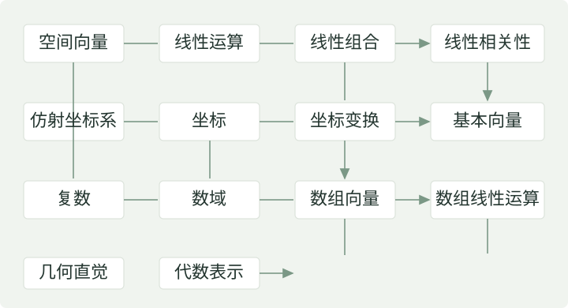

从几何走向坐标
第一章 · 向量
速度、位移和力有什么共同之处？本章先从三维空间中的几何向量出发，建立线性运算与线性相关性的语言，再借助坐标、复数和数域，把向量推广到高维数组。
向量及其运算
思考 · 什么是向量？
我们熟悉的速度、位移和力，都既有大小，又有方向。把这些共同特征抽象出来，就得到本章首先讨论的几何向量。向量可以写成 \(\overrightarrow{AB}\) 或 \(\vec a\)，其模长记作 \(|\vec a|\)。


具有相同大小与方向的有向线段表示相等的向量。平移箭头不改变向量；大小相同、方向相反的向量记为 \(-\vec a\)。模长为 1 的向量叫作单位向量。
零向量 \(\vec0\) 的模长为 0。按讲稿约定，任意方向都视为零向量的方向，因此它与任意向量平行；它本身没有唯一确定的方向。
几何 · 从合成速度、合成力理解加法
向量加法：平行四边形法则与三角形法则
让两个向量共用起点，所构成的平行四边形的对角线给出 \(\vec a+\vec b\)。也可以把 \(\vec b\) 的起点接到 \(\vec a\) 的终点：从最初起点到最终终点的箭头，就是它们的和。

向量减法：先取负向量，再做加法
若 \(\vec a=\overrightarrow{OA}\)、\(\vec b=\overrightarrow{OB}\)，那么 \(\vec a-\vec b=\overrightarrow{BA}\)。注意箭头从 \(B\) 指向 \(A\)。

定义 · 数乘与线性运算
向量的数乘

设 \(\lambda\in\mathbb R\)。向量 \(\lambda\vec a\) 的长度是 \(|\lambda|\,|\vec a|\)。当 \(\vec a\ne\vec0\) 时，\(\lambda>0\) 保持方向，\(\lambda<0\) 反转方向；当 \(\lambda=0\) 或 \(\vec a=\vec0\) 时，结果是零向量。
若 \(\vec a\ne\vec0\)，讲稿用下面的记号表示与它同向的单位向量：
线性运算
向量的加法和数乘统称为向量的线性运算。它们的八条基本性质，是以后公理化定义线性空间的出发点。
性质 · 线性运算的八条基本性质
对任意空间向量 \(\vec a,\vec b,\vec c\) 和实数 \(\lambda,\mu\)，有：
- 加法交换律：\[\vec a+\vec b=\vec b+\vec a\]
- 加法结合律：\[\vec a+(\vec b+\vec c)=(\vec a+\vec b)+\vec c\]
- 存在零元：\[\vec a+\vec0=\vec a=\vec0+\vec a\]
- 存在负元：\[\vec a+(-\vec a)=\vec0=(-\vec a)+\vec a\]
- 数乘单位元：\[1\vec a=\vec a\]
- 数乘结合律：\[\lambda(\mu\vec a)=(\lambda\mu)\vec a\]
- 左分配律：\[(\lambda+\mu)\vec a=\lambda\vec a+\mu\vec a\]
- 右分配律：\[\lambda(\vec a+\vec b)=\lambda\vec a+\lambda\vec b\]
这里的性质先来自几何向量。第六章“线性空间”将把这八条性质作为一般定义的基础。
例题 · 缩放一个箭头
讲稿中的 \(0.5\vec a\)、\(2\vec a\) 分别把箭头缩短一半、放大两倍；\(-\vec a\)、\(-1.5\vec a\) 还会反转方向。对于非零向量 \(\vec b\)，\(-\pi\vec b\) 反向且长度变为 \(\pi\) 倍，\(e\vec b\) 则同向且长度变为 \(e\) 倍。
探索 · 比较两种加法作图
演示即将加入先在纸上画出同一对向量的平行四边形法则与三角形法则，再交换相加顺序。未来这里可拖动箭头并调节数乘系数。
即时自测
已知 \(\vec a=\overrightarrow{OA}\)、\(\vec b=\overrightarrow{OB}\)。\(\overrightarrow{AB}\) 等于什么？若 \(|\vec a|=2\)，\(-\tfrac32\vec a\) 的长度和方向是什么？
查看答案与解释
\(\overrightarrow{AB}=\vec b-\vec a\)。\(-\tfrac32\vec a\) 的长度为 3，方向与 \(\vec a\) 相反。减法与数乘都要区分“长度”和“方向”。
向量线性相关性
思考 · 用少数几个向量，描述哪些位置？
从给定的一组向量出发，只使用加法和数乘，可以得到什么？这些向量中，是否有某个方向其实是多余的？这分别引出线性组合与线性相关性。
定义 · 线性组合
设 \(\vec a_1,\ldots,\vec a_m\) 是一组向量，\(\lambda_1,\ldots,\lambda_m\in\mathbb R\)。向量
叫作这组向量的一个线性组合。也就是说，它是从这组向量出发，通过线性运算得到的向量。

几何 · 线性组合的几何解释
固定原点 \(O\)，空间中的点 \(P\) 与向量 \(\overrightarrow{OP}\) 一一对应。于是，可以把向量的集合看成终点组成的几何图形：

- 一个非零向量 \(\vec a\) 的全体线性组合，构成过原点且与 \(\vec a\) 平行的直线。
- 两个不共线的向量 \(\vec a,\vec b\) 的全体线性组合，构成过原点且平行于这两个方向的平面。
例如，\(0.8\vec a+2\vec b\)、\(-1.5\vec a+0.6\vec b\)、\(-0.2\vec a-\vec b\)，都落在同一个平面内。全体线性组合组成的集合，后续也会称为这些向量的张成空间。
定义 · 线性相关与线性无关
若存在不全为零的实数 \(\lambda_1,\ldots,\lambda_m\)，使得
则称向量组线性相关。否则称为线性无关：任意不全为零的系数都不能使组合等于零向量。等价地，组合等于零向量时，只能有 \(\lambda_1=\cdots=\lambda_m=0\)。
“不全为零”是至少有一个系数非零，不是要求每一个系数都非零。
例题 · 讲稿中的线性相关例题
给定任意空间向量 \(\vec a,\vec b,\vec c\)，证明下面三个向量线性相关：
展开讲稿解法与计算
取系数 \(3,-1,-2\)。它们不全为零，而且
所以三个向量线性相关。也可以写成 \(\vec e_2=3\vec e_1-2\vec e_3\)：第二个向量可以由另外两个表示。
几何 · 线性相关的几何解释
以下结论针对三维空间中的几何向量，并把箭头平移到同一起点：
- 一个向量线性相关，当且仅当它是零向量。
- 两个向量线性相关，当且仅当它们共线。
- 三个向量线性相关，当且仅当它们共面。
- 四个及四个以上的空间向量一定线性相关。
最后一条依赖“三维空间”这个前提，不能直接套用到后面的一般高维数组向量。
探索 · 什么时候增加了一个新方向？
演示即将加入固定两个不共线向量，把第三个向量放到它们所在的平面内，再移出平面。预测这组三个向量何时线性相关，何时线性无关。
即时自测
若 \(\vec a\ne\vec0\)，向量组 \(\vec a,2\vec a,\vec0\) 是否线性相关？请给出一组符合定义的系数。
查看答案与解释
线性相关。例如取 \(2,-1,0\)，有 \(2\vec a-2\vec a+0\vec0=\vec0\)。也可以取 \(0,0,1\)。系数允许部分为零。
坐标系、坐标与坐标变换
思考 · 坐标轴一定要互相垂直吗？
笛卡尔坐标系中，坐标轴互相垂直。为了允许斜交的坐标轴，需要先回答：什么样的三个向量，能唯一表示空间中的每个向量？
几何 · 三个不共面的方向
两个不共线的方向只覆盖一个平面。加入第三个不在该平面内的方向，就能走出这个平面。三个方向不需要正交，长度也不需要等于 1。

定理 · 向量的基本定理
设 \(\vec e_1,\vec e_2,\vec e_3\) 是三维空间中的三个不共面的向量。对于每个向量 \(\vec a\)，存在唯一的有序实数组 \((x_1,x_2,x_3)\)，使得
基、坐标与仿射坐标系
这三个向量构成一组基。固定它们的顺序后，系数 \((x_1,x_2,x_3)\) 就是 \(\vec a\) 在该基下的坐标。再指定一个原点 \(O\)，就得到仿射坐标系：
点 \(P\) 的坐标定义为 \(\overrightarrow{OP}\) 的坐标。因此，固定坐标系后，“空间中的点”“空间向量”和“\(\mathbb R^3\) 中的有序数组”三者一一对应。

理解“存在”与“唯一”
存在性可以从平行投影理解：把 \(\vec a\) 沿 \(\vec e_3\) 的方向投影到 \(\vec e_1,\vec e_2\) 所在的平面，平面内的部分由前两个向量表示，剩余部分是 \(\vec e_3\) 的倍数。
若同一个向量有两种表示，作差就得到三个基向量的一个零线性组合。它们不共面，因而线性无关，所以各个系数之差都为零。这就说明坐标唯一。
定义 · 向量的坐标运算
在同一组基下，加法与数乘转化为逐分量运算：
理由是把每个向量展开为基向量的线性组合，再使用分配律合并同一基向量的系数。这个结论不要求基是正交的。
定义 · 坐标变换
给定两个坐标系 \([O;\vec e_1,\vec e_2,\vec e_3]\) 和 \([O';\vec e'_1,\vec e'_2,\vec e'_3]\)。设点 \(P\) 的坐标分别为 \((x,y,z)\) 与 \((x',y',z')\)。按讲稿的记号，先给出：
- 旧原点 \(O\) 在新坐标系中的坐标 \((x'_0,y'_0,z'_0)\)，即\[\overrightarrow{O'O}=x'_0\vec e'_1+y'_0\vec e'_2+z'_0\vec e'_3\]
- 旧基向量在新基下的表示：\[\vec e_j=a_{1j}\vec e'_1+a_{2j}\vec e'_2+a_{3j}\vec e'_3,\quad j=1,2,3.\]
那么两个坐标之间的关系是：
展开坐标变换的推导
关键是三角形法则：
把右侧的 \(\overrightarrow{OP}=x\vec e_1+y\vec e_2+z\vec e_3\) 展开，再把每个 \(\vec e_j\) 换成新基的线性组合。收集 \(\vec e'_1,\vec e'_2,\vec e'_3\) 的系数，便得到上面三条式子。
学习矩阵乘法后，可以把它简写为 \(X'=AX+X'_0\)，其中 \(A=(a_{ij})\) 的第 \(j\) 列正是旧基向量 \(\vec e_j\) 在新基下的坐标。
这里变换的是点的坐标，所以包含原点平移项。对于同一个自由向量在两组基下的坐标，关系是 \(X'=AX\)，没有平移项。
例题 · 原点和基一起改变
设 \(\overrightarrow{O'O}=\vec e'_1\)，并且 \(\vec e_1=2\vec e'_1\)、\(\vec e_2=\vec e'_1+\vec e'_2\)、\(\vec e_3=\vec e'_3\)。则
旧坐标为 \((1,2,3)\) 的点，在新坐标系下是 \((5,2,3)\)。点没有移动，改变的是描述它所用的坐标系。
探索 · 同一个点，不同的坐标
演示即将加入未来这里可以分别移动原点、改变基向量。先想一想：只平移原点，会改变自由向量的坐标吗？会改变点的坐标吗？
即时自测
在上面的例子中，若自由向量 \(\vec v\) 在旧基下的坐标为 \((1,2,3)\)，它在新基下的坐标是什么？
查看答案与解释
是 \((4,2,3)\)，因为
向量的换基不加原点平移项，区别于上面点的坐标 \((5,2,3)\)。
复数与数域
思考 · 向量的分量一定是实数吗？
前三节使用实数描述坐标。后面还会遇到复数分量的向量。为了统一讨论这些对象，需要先说明：允许作为坐标和系数的数，组成怎样的集合？
几何 · 复数与复平面
复数的代数表示为 \(z=x+iy\)，其中 \(x,y\in\mathbb R\)、\(i^2=-1\)。\(x=\operatorname{Re}z\) 是实部，\(y=\operatorname{Im}z\) 是虚部。在复平面上，\(z\) 对应点 \(P(x,y)\)，也对应从原点出发的箭头 \(\overrightarrow{OP}\)。


- 模长：\(|z|=\sqrt{x^2+y^2}\)。
- 辐角：对于 \(z\ne0\)，从正实轴沿逆时针方向转到 \(\overrightarrow{OP}\) 的角度 \(\theta\)，相差 \(2\pi\) 的整数倍表示同一方向。
- 共轭：\(\overline z=x-iy\)，对应关于实轴的镜像。
- 三角表示：\(z=r(\cos\theta+i\sin\theta)\)，其中 \(r=|z|\)。
零复数的模长为 0，但没有确定的辐角。
定义 · 数域
本课程把 \(\mathbb C\) 的子集称为数集。如果数集 \(\mathbb F\) 至少包含两个元素，并且对加、减、乘、除运算封闭，就称为数域。这里“除法封闭”始终要求除数不为零。
更具体地，对任意 \(a,b\in\mathbb F\)，都有
“封闭”是说：运算结果仍然留在这个数集里。
例题 · 哪些集合是数域？
讲稿中最常用的数域是有理数域 \(\mathbb Q\)、实数域 \(\mathbb R\) 和复数域 \(\mathbb C\)。自然数集 \(\mathbb N\) 与整数集 \(\mathbb Z\) 都不是数域：例如 \(1/2\) 不在这两个集合中。
引入数域后，实向量和复向量可以使用同一套记号与理论。后面的线性空间理论也将在数域上统一展开。
选读 · 讲稿中的两个补充说明
数集
也是数域，本课程不作要求。非零元素的倒数仍在这个集合中：
因为 \(a,b\) 为有理数且不同时为零，分母不为零。加、减、乘的封闭性也可直接验证。
在本课程“数域是复数子集”的约定下，\(\mathbb Q\) 是最小的数域。任何数域先由 \(a-a\)、\(a/a\)（取 \(a\ne0\)）得到 0 和 1，再由四则运算得到所有有理数。
探索 · 在复平面上观察共轭
演示即将加入在纸上标出 \(1+i\)、\(1-i\) 与 \(-1-i\)，比较它们的模长与方向。未来这里可以拖动复数点，同时观察代数表示、模长、辐角和共轭。
即时自测
设 \(z=1+i\)，求 \(|z|\)、\(\overline z\) 和一个辐角。再说明 \(\mathbb Z\) 为什么不是数域。
查看答案与解释
\(|z|=\sqrt2\)，\(\overline z=1-i\)，可以取 \(\theta=\pi/4\)。整数集含有 1 和 2，却不含 \(1/2\)，不满足除法封闭性。
数组向量
思考 · 从三个坐标走向任意多个分量
三维空间向量可以用三个数描述。若一条记录需要四个、一百个，甚至几千个数，虽然无法把它画成普通空间中的箭头，仍然可以把它看作数组向量，并定义同样的线性运算。
定义 · 数域上的 n 维数组向量
设 \(\mathbb F\) 为数域，\(n\) 为正整数。由 \(n\) 个 \(\mathbb F\) 中的数构成的有序数组
称为数域 \(\mathbb F\) 上的 n 维数组向量。\(a_i\) 叫作第 \(i\) 个分量，所有这样的数组组成的集合记作 \(\mathbb F^n\)。分量的顺序不能随意交换。
本章这两种形式都用于记录同一组有序分量；进入矩阵运算后，还需要区分行与列的形状。
几何与例题 · 从三维到高维
先看讲稿中几种熟悉的表示方法。高维的直觉，可以从“每个分量分别描述什么”建立起来。
| 对象 | 数组表示 | 分量个数 |
|---|---|---|
| 时空事件 | \((t,x,y,z)\)：时间与空间位置 | 4 |
| RGB / RGBA 颜色 | \((R,G,B)\) / \((R,G,B,A)\)：颜色通道与透明度 | 3 / 4 |
| 课程成绩 | 按固定课程顺序记录的成绩数组 | 课程数 \(n\) |
| 电影评分 | \((r_1,\ldots,r_n)\)：按电影顺序记录评分 | 电影数 \(n\) |
n 维数组指它有 n 个分量。只有当这些参数能独立变化时，才能直接把参数个数看作自由度；有约束的数据，其自由度可能更小。例如 \((t,2t,3t)\) 有三个分量，却只由一个自由参数决定。一般空间的维数将在第六章讨论。
机器学习中的特征向量
讲稿以图像识别为例：把 256 维颜色直方图、128 维边缘特征和 64 维纹理特征拼接起来，得到一个 \(256+128+64=448\) 维的向量。继续加入其他特征，可以得到更高维、甚至数千维的表示。
这些只是表示数据的例子。合法颜色或有效评分通常有取值限制，它们的集合不必对任意线性运算封闭；包含它们的数组空间才是后续研究的数学对象。
大模型中的高维向量：讲稿的 DeepSeek-V3 例子
把 token 理解为模型词表中的一个文本单位。设其词表为 \(T\)，\(|T|=129280\)。词嵌入给每个 token 分配一个 7168 维实向量：
存储这张词嵌入表，需要的参数个数是：
也就是约 9.27 亿个参数。这是词嵌入表的大小，并非整个模型的参数量。向量的具体数值通过训练学习得到，不是人为逐项规定的。
该例对应 DeepSeek-V3 的词表大小与隐藏维度，参见模型官方配置。
定义 · 高维数组向量的线性运算
设 \(\vec a,\vec b\in\mathbb F^n\)、\(\lambda\in\mathbb F\)，逐分量定义：
两个数组相等，当且仅当对应的每一个分量都相等：
由于数域中的运算满足相应规律，数组向量也满足前面的八条基本性质，此时标量取自 \(\mathbb F\)。
定义 · 高维数组向量的线性相关性
给定 \(\vec a_1,\ldots,\vec a_m\in\mathbb F^n\)，它们的线性组合仍写成 \(\lambda_1\vec a_1+\cdots+\lambda_m\vec a_m\)，但现在要求 \(\lambda_i\in\mathbb F\)。
若存在 \(\mathbb F\) 中不全为零的系数，使这个组合等于零向量，则向量组在 \(\mathbb F\) 上线性相关；否则线性无关。定义沿用同一形式，系数所属的数域必须明确。
例题 · 基本向量
在 \(\mathbb F^n\) 中，令 \(\vec e_i\) 的第 \(i\) 个分量是 1，其余分量是 0：
讲稿称它们为基本向量。它们线性无关，且任意数组向量都可以表示成它们的线性组合：
为什么基本向量线性无关？
组合 \(\lambda_1\vec e_1+\cdots+\lambda_n\vec e_n\) 的第 \(i\) 个分量就是 \(\lambda_i\)。若组合等于零向量，逐个比较分量，就得到所有 \(\lambda_i=0\)。这也说明上面的表示是唯一的。
探索 · 看不见的维度，也可以计算
演示即将加入用一个四维数组依次表示四个特征，尝试只改变其中一个分量。未来这里可以切换 RGB、特征向量等实例，把高维数组的分量与实际含义对应起来。
即时自测
在 \(\mathbb C^3\) 中，设 \(\vec a=(1,i,0)\)、\(\vec b=(0,1,1)\)。求 \(\vec a+i\vec b\)，并用基本向量表示结果。
查看答案与解释
规则仍是逐分量相加与数乘；这次系数来自复数域。
串联本章知识
本章主要内容
从几何对象出发，用线性运算组织它们，再通过坐标进入可以计算的数组世界。
- 空间向量 → 线性运算：加法、数乘与八条基本性质。
- 线性组合 → 线性相关性：描述可到达的范围，判断方向是否冗余。
- 仿射坐标系 → 坐标 → 坐标变换：用一组基表示向量，用原点与基表示点。
- 复数 → 数域：明确分量与系数的取值范围。
- 数组向量 → 线性运算与相关性 → 基本向量：把三维中的思路推广到 \(\mathbb F^n\)。

进入第二章前，请确认：你能按分量进行线性运算，理解“不全为零”的含义，并能区分一个几何向量与它在某组基下的坐标。